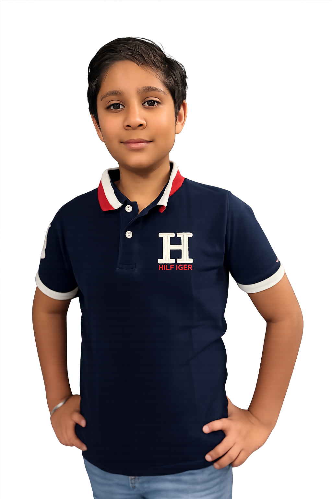
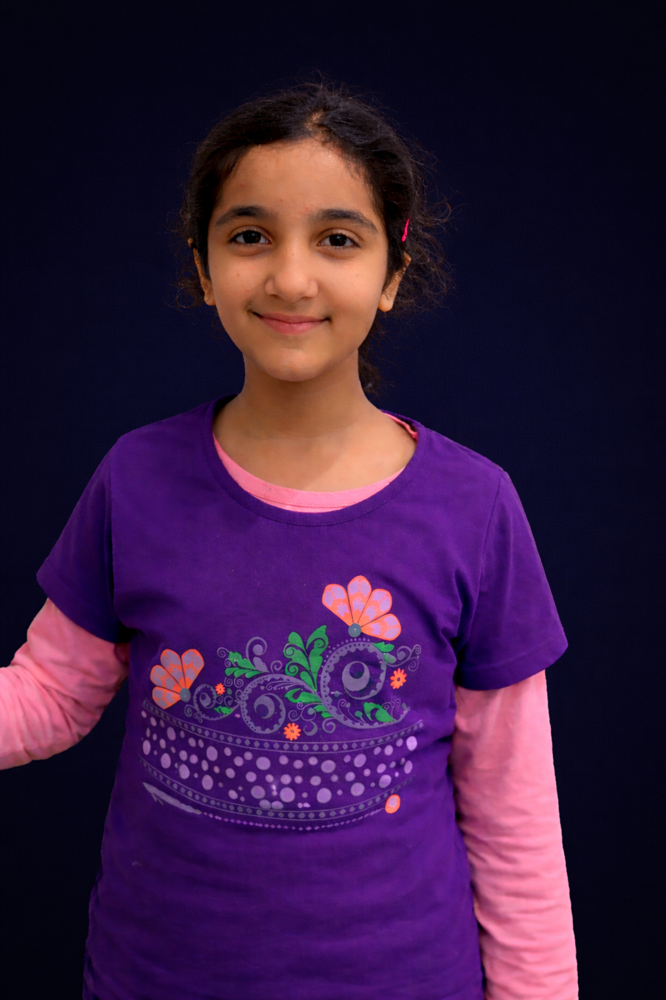
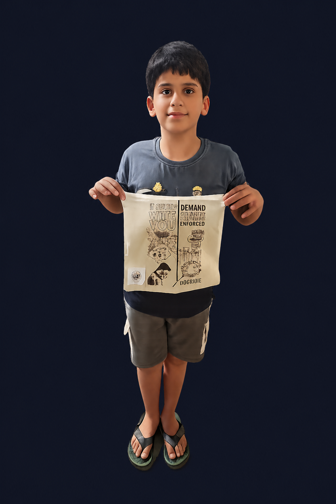

Raahiv The Super Segregator
Raahiv Mahajan, an 11-year-old from Gurugram, has been our Super Segregator this month! He follows all segregation rules diligently, turning his home into a zero-waste zone. His passion for the environment started with a school project, and now he inspires his entire neighborhood.
- Age: 11
- Location: Gurugram, India
- Achievement: Reduced family waste by 50% through composting and recycling
Raahiv's Segregation Techniques

Will you be the Waste Wizard?
Will you encourage your family, school and community to segregate waste?
- More About you..
Your Segregation Techniques

Mehr The Recycle Ranger
Mehr Kaur Chawla, an inspiring 11-year-old from Gurugram, has been recognized as our Super Segregator of the Month!
She has successfully learned and implemented proper waste segregation into four categories—wet, dry, sanitary, and special care—in accordance with the SWM Rules 2026. Going a step further, Mehr educated five more people on correct waste segregation practices and encouraged them to take a pledge to adopt these habits in their daily lives.
- Age: 11
- Location: Gurugram, India
- Achievement: Successfully learned and practiced proper waste segregation into four categories through the Super Segregator Contest.
Mehr's Segregation Techniques

Dhairya The Waste Master
🌟 Super Segregator of the Month: Dhairya Rana 🌟
Dhairya Rana has been recognized as our Super Segregator of the Month for April! With great commitment and responsibility, Dhairya has learned and practiced proper waste segregation into four categories—wet, dry, sanitary, and special care—in line with the SWM Rules 2026. By adopting these practices consistently, Dhairya is contributing to a cleaner and more sustainable environment.
Going beyond personal action, Dhairya has also helped spread awareness by encouraging others to follow proper waste segregation, inspiring positive change within the community.
- Age: 11
- Location: Gurugram, India
- Achievement: Successfully learned and practiced proper waste segregation into four categories through the Super Segregator Contest.